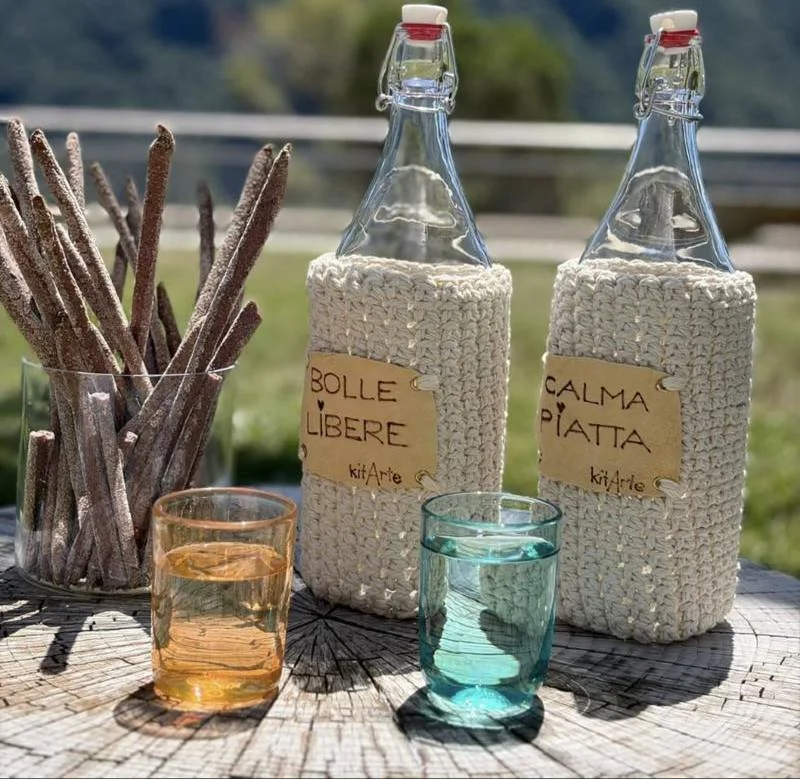
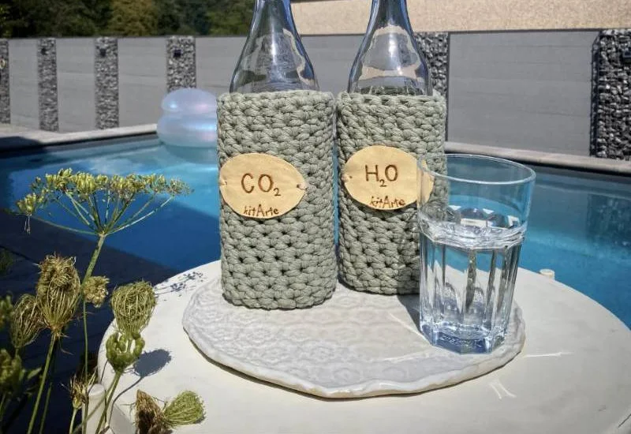
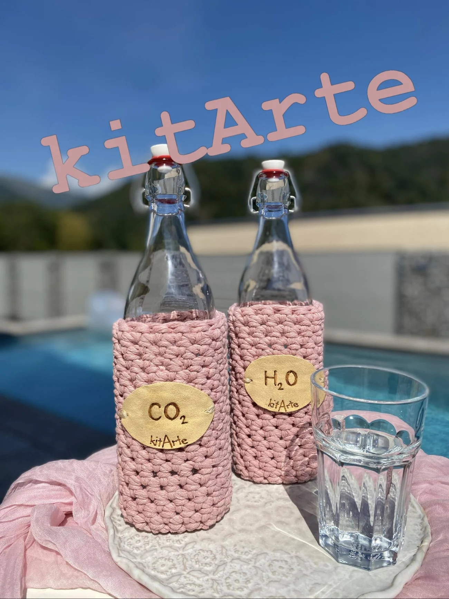
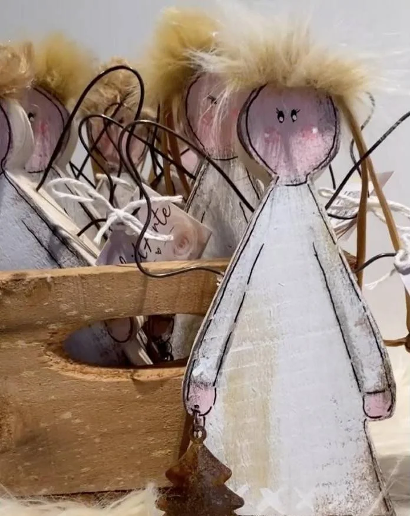
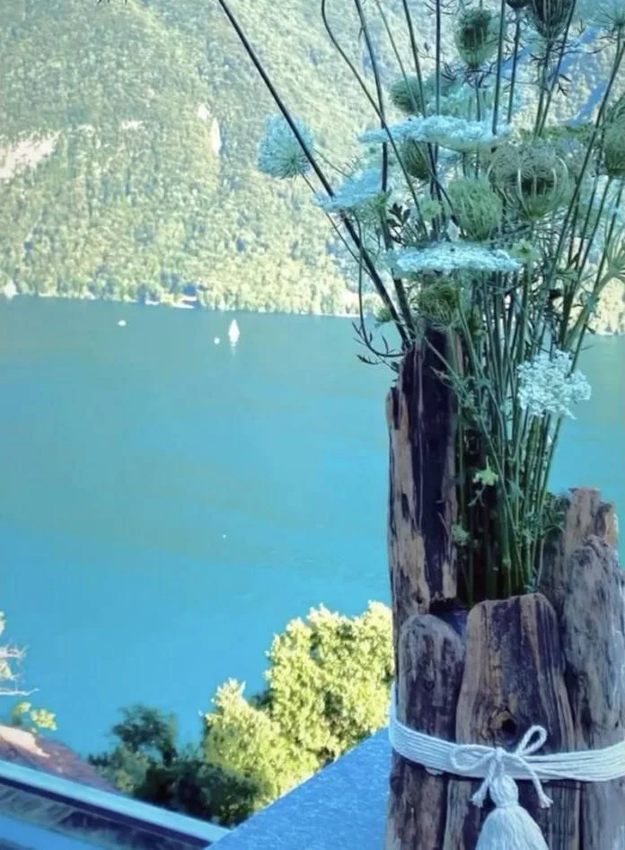
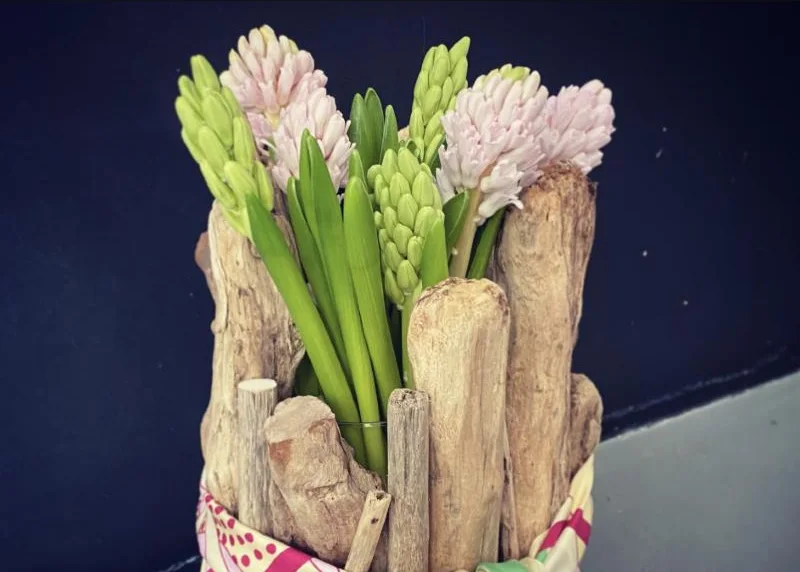
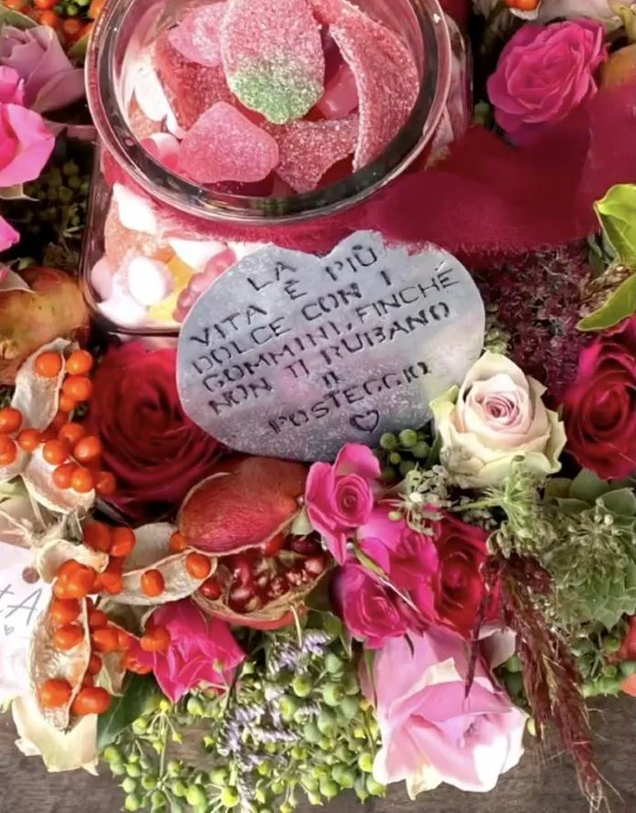
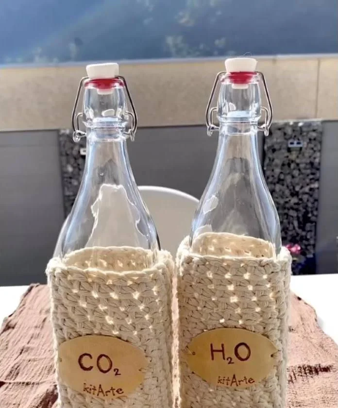
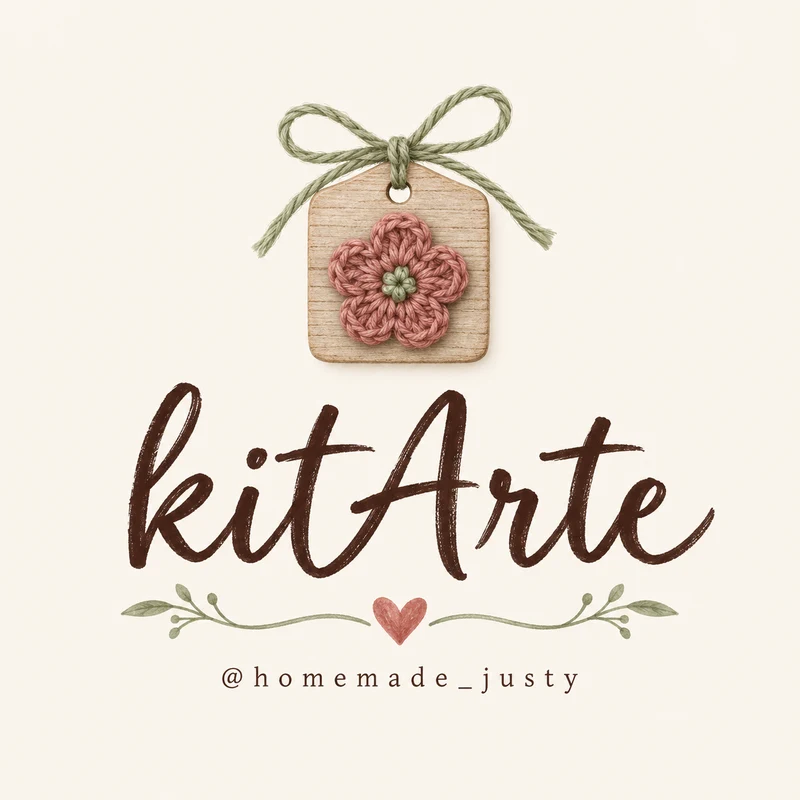

Creare è la mia passione.
Ogni pezzo kitArte nasce dalle mie mani: bottiglie vestite all'uncinetto, angeli di legno dipinti, fiori raccolti in legni levigati dall'acqua. Nessuno è uguale all'altro.
Ogni stagione ha le sue.
Su Instagram le raccolgo per tema, stagione dopo stagione: dall'autunno al Natale, da Pasqua all'estate.



Bolle libere,
calma piatta.
Bottiglie per l'acqua, con le bollicine e senza. Ognuna ha il suo vestito lavorato a mano e un'etichetta che dice cosa c'è dentro.
Un altro colore, un'altra scritta?
Chiedimelo e ne parliamo.

Gli angeli sono tornati.
Sagome di legno dipinte una per una: guance rosa, capelli morbidi, un alberello appeso alla mano. Stanno bene sulla porta, sull'albero o dentro un regalo.
- Ognuno ha il suo viso, disegnato a mano
- Arrivano con il cartellino kitArte
- Per Natale meglio scrivermi per tempo
Fiori, legni e qualche gommino.
Composizioni da regalare: per un compleanno, per dire grazie, o solo per portare un po' di primavera in casa. Fiori freschi in legni levigati dall'acqua e vasetti pieni di dolcetti.




E poi ci sono le borsette.
Borsette in pelle, anche vintage, e in similpelle, dipinte a mano. Hai in mente un disegno o dei colori? Scrivimi e ne parliamo.
Hai un'idea? La facciamo insieme.
Mi scrivi
Un messaggio su Instagram: per chi è, per quale occasione, che colori ti piacciono.
Scegliamo i dettagli
Filato, fiori, scritte sul cartellino. Ne parliamo bene prima di iniziare.
Lo creo a mano
Pezzo per pezzo, con calma. Quando è pronto ti avviso e ci mettiamo d'accordo.

Ti è piaciuto qualcosa? Scrivimi.
Rispondo io, di persona. Raccontami cosa cerchi.
@homemade_justy